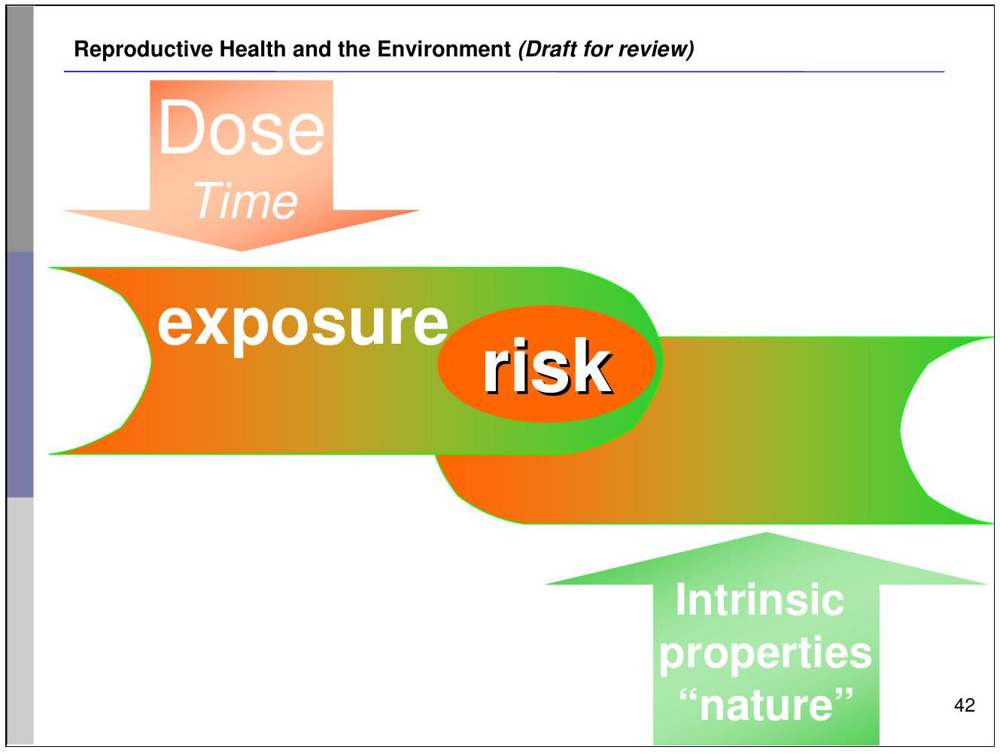
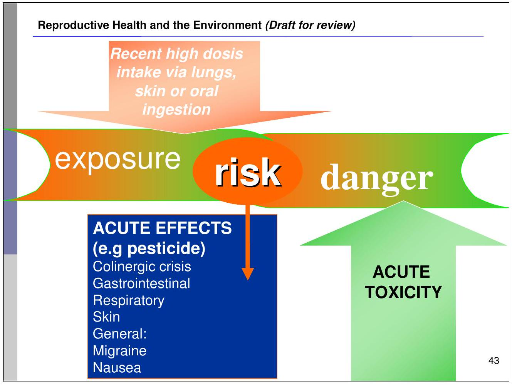
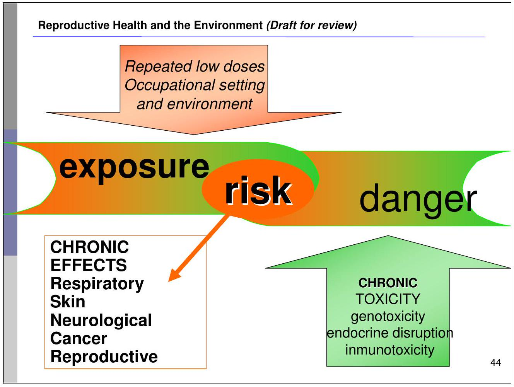

SECTION 3: Environmental exposures and reproductive health
- Introduction to environmental reproductive health
- Endocrine disruptors
- Examples from wildlife and humans
Section 3 will describe environmental exposures and the relationship to reproductive health. This section will introduce the concept of endocrine disruptors and overview pertinent factors related to this topic. The section will also provide some evidence of endocrine disruptors and their role on reproductive health from wildlife and human studies.
3. A. REPRODUCTIVE HEALTH AND THE ENVIRONMENT
- Focuses on exposure to contaminants found in the environment, specifically during critical periods of development.
- All the physical, chemical, biological and social factors that may affect the origin, growth, development and survival of a person in a given setting.
Examples include:
- Specific synthetic chemicals
- Some metals
- Air pollutants
Still an emerging issue!
Reproductive health and the environment focuses on exposures to environmental contaminants during critical periods of human development. These periods are directly related to reproductive health throughout the life course, including the period before conception, at conception, fertility, pregnancy, child and adolescent development, and adult health. Exposures to different environmental contaminants may influence reproductive health status through the process of epigenetics.
Environmental toxicants may potentially induce effects in human reproductive processes. However, the extent of this hypothesis must be supported through greater levels of research.
The slide shows that the dose and the time of the exposure, as well as the "danger" posed by the properties and toxicity of the environmental factor determine the risk for health.
The slide shows that the dose and the time of the exposure (in this case we take the example of pesticide ingestion) as well as the "danger" posed by the properties and toxicity of the environmental factor determine the risk for health.
In the case of repeated low doses in the occupational setting, of pesticides for instance, the toxicity is chronic and might affect the regulations/metabolism of genes and the immune, endocrine and other systems. The effects are chronic and might only be visible after a latency period.
| Type of compound substance | Specific example | Reproductive health effects |
|---|---|---|
| Commonly used pesticides | DDT (dichlorodiphenyltrichloroethane) Organophosphates |
Multiple case studies from wildlife exposures; some human evidence |
| Flame retardants | PBDEs (polybrominated diphenylethers) | Animal exposure models/data |
| Dioxin-like substances | PCBs (polychlorinated biphenyls) | -Animal exposure models/data -Wildlife exposure studies -Weak human exposure data |
| Phthalates | PVC (polyvinyl chloride) Di ethyl hexyl phthalate |
-Animal exposure models/data - Emerging human studies (surveys, biomarker associations) |
| Additives to consumer products (plasticizers) | BPA (bisphenol A) | - Evidence from animal exposure models/data |
Several chemicals, compounds (both synthetic and organic), metals, and other environmental toxicants have been associated with adverse human health effects. Significant scientific concerns over the potential impact of these environmental hazards on reproductive health have increased research and public debate on this issue. For instance, evidence is arising on relationships between spontaneous abortion as well as reduction of anogenital distance and exposure to dichlorodiphenyltrichloroethane (DDT) during pregnancy.
3.B. ENDOCRINE DISRUPTORS: DEFINITIONS
Endocrine Disruptor is an exogenous substance or mixture that alters the function of the endocrine system and consequently results in adverse health effects
Potential endocrine disruptor is an exogenous substance or mixture that possesses properties that might lead to endocrine disruption
Research in this field is just beginning!
An endocrine disruptor is an exogenous substance or mixture that alters the function of the endocrine system and consequently causes adverse health effects in an intact organism, or its progeny, or subpopulations.
A potential endocrine disruptor is an exogenous substance or mixture that possesses properties that might be expected to lead to endocrine disruption in an intact organism, or its progeny, or subpopulations.
Key issues in understanding the role and action of endocrine disruptors and potential endocrine disruptors are the mechanisms of action and consequences of exposure to endocrine disrupting chemicals, including mixture of various chemical compounds, dose response relationships, latent effects, and age of exposure.
It is important to acknowledge that the state of science regarding endocrine disruptor research is only beginning and much more is yet to be learned about the specific qualities of these environmental compounds. Endocrine disruption has sometimes been demonstrated for animals (wildlife/in vivo and in vitro studies). For instance, tributyl tin (TBT) originating from antifouling paints used to treat boat hulls induces a form of pseudohermaphroditism (termed imposex) in female gastropods by an endocrine-disrupting mechanism.
ENDOCRINE DISRUPTORS
- Endocrine disruptors interfere with the production, metabolism, and action of natural hormones in the body
- Disrupt hormones needed for homeostasis and developmental processes
- Alter estrogen, androgen, thyroid, neuroendocrine and metabolic signaling
Endocrine disruptors include:
- Some pesticides (DDT, DDE)
- Some herbicides (atrazine)
- Some persistent organic pollutants (dioxin)
- Potential: phthalates
The endocrine system is a complex network of hormones that regulates various bodily functions such as growth and development. The endocrine glands include the pituitary, thyroid, adrenal, thymus, pancreas, ovaries, and testes. These glands or organs release carefully-measured levels of hormones into the bloodstream that act as natural chemical messengers to control important processes of the body.
Specific environmental toxicants directly affect the endocrine system. Endocrine disruptors are exogenous agents that interfere with the synthesis, secretion, transport, binding, action, or elimination of natural hormones in the body that are responsible for the maintenance of homeostasis, reproduction, development, and/or behavior. Endocrine disruptors can change normal hormone levels, stimulate or halt the production of certain hormones, or change the way hormones move through the body.
However, greater research is still needed to substantiate this hypothesis.
DDT: dichlorodiphenyltrichloroethane
DDE: dichlorodiphenyldichloroethylene
POSSIBLE MECHANISMS OF ENDOCRINE DISRUPTION
- Mimic effects of endogenous hormones
- Antagonize effects of endogenous hormones
- Disrupt synthesis and metabolism of endogenous hormones
- Disrupt synthesis of hormone receptors
- Alter target cell sensitivity
- Organs vulnerable to endocrine disruption, e.g breast, uterus, cervix, vagina, testis, brain
- Co-existing mechanisms such as thyroid disruption or reduced energy intake
- Limitations of in vivo animal models
Endocrine disrupting compounds act by mimicking or antagonizing naturally occurring hormones in the body. It is believed that endocrine disruptors act by interfering with synthesis, secretion, transport, metabolism, binding action, or elimination of natural hormones that are present in the body and are responsible for homeostasis, reproduction, and developmental process.
HORMONAL MECHANISMS OF ENDOCRINE DISRUPTORS
Endocrine disruptors can be classified based on their antagonizing or mimicking behaviors
- Estrogen agonists: mimic estrogens
- Estrogen antagonists: block estrogens
- Androgen agonists: mimic androgens
- Androgen antagonists: block androgens
Endocrine disruptors act by mimicking or antagonizing naturally occurring hormones in the body. However, there are different types of hormones in the body as explained in previous slides. For this reason, endocrine disruptors must exert their effects by mimicking or antagonizing specific types of hormones in the body. In fact, endocrine disruptors may be categorized according to their mimicking or antagonizing behavior.
The largest body of evidence exists for endocrine disruptors that mimic estrogen. These are called estrogenic or estrogen agonists because they behave similarly to naturally occurring estrogens in the body. Endocrine disruptors that are estrogenic (green molecule) will mimic the naturally occurring estrogen (orange molecule) and bind with the receptor (purple molecule) that was meant for the naturally occurring estrogen.
Endocrine disruptors may also antagonize estrogen activity, and are thus called estrogen antagonists. This means that they may bind the same site on the receptor of the agonist does but are incapable of doing the task that the agonist can do.
Similarly, this same concept may apply to other types of hormones, including androgens. Endocrine disruptors, through the same principle as described above, can be either androgen agonists or androgen antagonists. The largest body of evidence exists for compounds that are estrogenic in nature.
Endocrine disruptors can also affect hormonal mechanisms (e.g thyroid).
THE EXPOSURE PATHWAY TO ENDOCRINE DISRUPTORS
Sources
- Water, air, soil, dust, food, and consumer products
Biological uptake is the moment of exposure when endocrine disruptors enter the body
Potential uptake routes:
- Inhalation of gas or particles
- Ingestion of food, water, non-food elements
- Dermal absorption through the skin
Some environmental toxicants, such as pesticides, are intentionally released into the environment. Others, however, are released unintentionally during manufacturing, use, and disposal. A few chemicals are created unintentionally as by-products of industrial processes. This is true for a group of chemicals known as "dioxin-like" pollutants. Environmental toxicants that may exert adverse effects on reproductive health are present in media such as the water, air, soil, dust, food, and consumer products. Humans are exposed to these contaminants in the home, community, school, or workplace. To potentially cause harm, a toxicant must come into contact with a individual and enter the body, a step referred to as biologic uptake. Biologic uptake is the moment at which exposure occurs. Toxicants enter the body in one or more of three ways: inhalation, ingestion, or dermal absorption through the skin. Toxicants are then distributed to tissues an organs and subject to metabolism. Toxicants, or their metabolites, travel to target organs, such as the thyroid, ovaries, or testes, where they exert biological effects. Certain toxicants are stored in the body for long periods of time in muscle, bones or adipose tissue.
SPECIFIC ASPECTS OF EXPOSURE
- Effect of low doses
- Subtle disruptions of endocrine signaling can have significant effects on the body
- Wide range of effects
- Endocrine signals govern virtually all processes in the body
- Effects can be seen in many different diseases and conditions
- Changes may be seen at population level (e.g. population shifts in fertility) but difficult to demonstrate at the individual level
- Multiple exposures
- Humans are exposed to a mixture of environmental contaminants and endocrine disruptors
- Important in determining risk and the potential for synergistic effects
Normal endocrine signaling involves very small changes in hormone levels, yet these changes can have significant biological effects. Studies of endocrine disruptors in animal models have sometimes demonstrated that no threshold dose could be detected, that is, health effects were apparent at the lowest doses tested.
Secondly, environmental contaminants may demonstrate a wide range of effects. Endocrine signals govern virtually every organ and process in the body. That means that when outside chemicals interfere with those systems, the effects can be seen in many different diseases and conditions some of which we are just learning to recognize as the result of endocrine disruption.
On a daily basis, humans can be exposed a mixture of environmental contaminants that are found in the air, water, and food. Certain chemicals can have a greater adverse effect when other chemicals are present in the body.
IMPORTANT POINTS RELATED TO ENDOCRINE DISRUPTORS' HEALTH EFFECTS
- Adults may compensate for endocrine disruptors' effects
- Exposure when endocrine system is developing may result in permanent damage
- Exposure to same endocrine disruptors in different stages of life results in different effects
- Endocrine disruptors do not always affect the system predicted
Endocrine disruptors may impact physiological processes in multiple ways. However, there are important points that must be stressed. First of all, if exposure to endocrine disruptors occurs in adulthood, the effects of exposure may be compensated for by homeostatic mechanisms and thus may not result in evident health disparities. Additionally, the period in which the endocrine system is being programmed is incredibly vulnerable to damage. Thus, if an individual is exposed to an endocrine disruptor during this stage, permanent damage to the function of hormonal signalling pathways may occur. This can be specifically evident for stimulatory and inhibitory signalling pathways in the endocrine system.
It is also important to note that the effects of endocrine disruptors are not ubiquitous throughout the different stages of life. That is to say that exposures to even the same levels of endocrine disruptors in different stages of development may induce different effects.
Finally, due to the complexity involved in endocrine signalling, many different organ systems may be affected by a change in the function of one branch of the endocrine system. For this reason, when endocrine disruptors induce effects in the body, the extent of their action is largely unpredictable for other organ systems or hormonal signalling pathways.
Dose-response relationships are a critical component in understanding the mechanism of action for many endocrine disruptors. However, due to limited research and evidence from human exposures and effects, the true dose-response nature of many different endocrine disruptors is unknown. It is important to recognize that endocrine disruptors could affect the endocrine system by mimicking or antagonizing the hormones that are already present in the body. Therefore, the concentrations at which human health is affected by endocrine disruptors may be much less than with other environmental contaminants. There is uncertainty regarding the dose-response relationship between exposure to endocrine disruptors and adverse health effects dictated by changes in hormonal function and homeostatic equilibrium.
ENDOCRINE DISRUPTORS AND NEUROTOXICITY
Hundreds of chemicals and environmental toxicants can affect the nervous system
Mechanism of action
- transient changes in adult nervous system
- permanent changes induced in neural development
- direct toxic action on neuronal cells, effects via immune system, hormonal effects (thyroid), systemic diseases
Some pesticides and poly-chlorinated biphenyls (PCBs) are neurotoxic
More than 850 chemicals directly impact the nervous system and may cause adverse health effects. This includes some metals, organic solvents, agrochemicals, poly-halogenated aromatic hydrocarbons, and pharmaceuticals. Some of these environmental contaminants may be endocrine disrupting compounds because the reproductive endocrine system is primarily regulated by the neuroendocrine system.
There are two different hypothesized mechanisms of actions of endocrine disruptors on the nervous system. Endocrine disruptors may activate specific properties in adults and produce transient changes in the nervous system, or, exposure to endocrine disruptors during neural development may induce changes in neurobehavioral function, specifically sex-related behaviours. Also, there is direct toxic action on neuronal cells with effects seen via the immune system, hormonal effects (thyroid) and systemic diseases.
Specific chemicals may alter neurotransmitter concentrations, thus influencing neuroendocrine function and eventually reproduction. Some studies have indicated that poly-chlorinated biphenyls (PCBs) may act through this mechanism, but greater research in necessary.
ENDOCRINE DISRUPTORS AND NEUROTOXICITY: PBDEs AND PHTHALATES
Prenatal exposure to polybrominated diphenyl ethers (PBDEs) may result in neurodevelopmental effects in infants
- Thyroid disruption
- Estrogen/androgen disruption
Prenatal exposure to phthalates associated with Attention-deficit hyperactivity disorder (ADHD)
- Oxidative metabolites formed
- Antagonistic effects on the thyroid gland
-Polybrominated diphenyl ethers (PBDEs) are widely used flame retardant compounds that are persistent and bioaccumulative and therefore have become ubiquitous environment contaminants. A number of toxicologic studies have demonstrated that exposure to PBDEs may have endocrine-disrupting effects. Most of these studies have focused on thyroid hormone disruption and a smaller number on disruption of the estrogen/androgen hormone system. Animal studies suggest that prenatal PBDE exposure may result in adverse neurodevelopmental effects. A study of 100 children prenatally exposed to PBDE demonstrated that the chemical altered the neurodevelopment of children up to 72 months of age.
-At least 10 different phthalates are used commercially as plasticizers and solvents. Human exposure to phthalates can occur through inhalation, ingestion, and dermal contact. Once absorbed, they are rapidly metabolized to monoesters, and the high-molecular-weight monoesters can undergo further oxidation to form oxidative metabolites. Antagonistic effects of phthalates on the thyroid gland in vivo and thyroid tissue in vitro have been reported. Recently, human studies have demonstrated that phthalate exposure in childhood was associated with attention deficit hyperactivity disorder (ADHD). Engel et al. determined that behavioral domains adversely associated with prenatal exposure to phthalates are commonly affected in children clinically diagnosed with conduct or attention deficit hyperactivity disorders.
3.C. REPRODUCTIVE HEALTH EFFECTS OF ENDOCRINE DISRUPTORS: EXAMPLES FROM WILDLIFE
Laboratory and field studies have demonstrated adverse reproductive health effects in wildlife exposed to environmental contaminants
Some adverse effects may be directly linked to endocrine disruption, but the causal pathway is largely inconclusive
Case studies to date have only involved high contamination exposures
The effects of environmental contaminants and potential endocrine disruptors have been studied extensively in wildlife. Specific mechanisms of the endocrine system, as well as hormonal events that regulate reproduction, are quite similar between some wildlife species and humans. Evidence from case studies has shown that wildlife may even be more sensitive to the action of certain environmental contaminants and endocrine disruptors. A specific case study involves a decline in reproductive function of marine seals exposed to increased levels of two organochlorines: PCBs and DDE. Organochlorines are man-made organic compounds commonly used as pesticides. They are extremely persistent in the environment and are known to bioaccumulate in living organisms. It has been demonstrated that the population of Baltic ringed seals has declined significantly in the last century due to reproductive disorders. Specific abnormalities have included partial or complete sterility, interruptions during early pregnancy, and stenosis (abnormal narrowing) or necessary reproductive organs. A time trend study conducted by a team of scientists demonstrated that the seal populations affected by the reproductive disorder contained high levels of PCBs and DDE levels. The results specifically highlight that high levels of PCBs were the leading cause of reproductive malfunction. However, greater research is needed to elucidate the mechanism of action in this case study.
DDT: dichlorodiphenyltrichloroethane
DDE: dichlorodiphenyldichloroethylene
PCBs: polychlorinated biphenyls
CASE STUDY: EGG SHELL THINNING
Predatory birds exposed to organochlorine compounds experience abnormal reproductive morphologies
DDT and breakdown product, DDE
Direct impact on egg shell strength
Near extinction of many North American bird species
A rather famous case study for environmental exposures and effects in wildlife has been the loss of top level predatory birds due to egg shell thinning. Due to their specific feeding behaviour, carnivorous birds are exposed to a higher level of bio-accumulative organic compounds. Numerous studies have observed abnormal reproductive morphologies, deformities, and alterations in behaviour for bird colonies exposed to organic compound contaminants, specifically DDE, the breakdown product of the pesticide, DDT. DDE directly effects the shell gland and results in egg shell breaking or cracking, and thus severe decreases in avian populations. The widespread use of DDT as a insecticide in North America nearly resulted in the extinction of several bird species. However, it is widely understood that birds may be more susceptible to environmental contaminants due to their modes of reproduction, specifically, the vulnerability of egg shells to specific toxicants. However, research still remains inconclusive and greater research is needed in this area to understand the mechanisms of action of these environmental contaminants.
DDT: dichlorodiphenyltrichloroethane
DDE: dichlorodiphenyldichloroethylene
CASE STUDY: DEVELOPMENTAL ABNORMALITIES IN ALLIGATORS
- Dicofol, organochlorine (OC) pesticide released into stream
- 90% decrease in alligator species
- High levels of OC compounds in alligators associated with significant decrease in male penis size
- Dicofol may interact with estrogen receptor during juvenile development
In 1980, a chemical spill in the state of Florida in the United States contaminated a stream with very high concentrations of dicofol, including its metabolites DDE and chloro-DDT. Dicofol is an organochlorine pesticide, similar in chemical nature and environmental effects to DDT. After the spill, the alligator population in the region decreased by 90% and adult alligators in the region were found to have high levels of dicofol and its by-products in their bodies. Alligators in the affected region demonstrated numerous reproductive dysfunctions, such as abnormal gonadal morphology and gonadal deformities. Specifically, male alligators in the contaminated area had significantly decreased phallic size and alterations in sperm cells. A proposed hypothesis is that the by-product of dicofol, DDE , may interact with the estrogen receptor and thus affect proper reproductive development in the juvenile alligator.
However, it must be stated that this specific case study demands greater research to document a dose response relationship between dicofol exposure and the reproductive health effects witnessed. Large carnivorous reptiles may bioaccumulate greater levels of environmental contaminants due to their feeding habits as well as their long life expectancies in the wild. Studies have shown that in fact, certain reptiles can bioaccumulate and biomagnify environmental contaminants to an equal or even greater scale than birds.
The diagram demonstrates male alligator phallic size in relation to the contaminated sites. The Woodruff lake region (far left bar) represents the control lake, while Apopka-GNS (far right bar) shows average phallic index in alligators at the contaminated site, and Apopka-NW (middle bar) shows the average phallic index in alligators in a contaminated area further away from the contaminated site.
DDT: dichlorodiphenyltrichloroethane
DDE: dichlorodiphenyldichloroethylene
3.D REPRODUCTIVE HEALTH EFFECTS OF ENDOCRINE DISRUPTORS: EXAMPLES OF EFFECTS ON HUMAN HEALTH
Widespread and persistent, chlorinated hydrocarbons may mimic the biological effects of estrogens.
Excessive estrogen exposure is a key risk factor for gynaecologic malignancies and benign proliferative disorders - e.g. endometriosis and leiomyoma.
Also on hormone-dependent physiological processes
- e.g. conception; fetal development
- Possibly on osteoporosis and cardiovascular disease
As increasingly more women enter the workforce, they may be exposed to a variety of occupational chemicals and hazards that may lead to adverse health and reproductive effects. In addition, smoking, alcohol consumption, and other lifestyle factors play an increasingly important role in determining the health status of women. There is now abundant evidence that environmental factors may contribute to many of the disease processes discussed above. Some examples of likely environmental impact on women's health include the following:
Among the most widespread and persistent environmental toxicants are chlorinated hydrocarbons (such as dichlorodiphenyltrichloroethane (DDT) and polychlorinated biphenyls), which are known to possess estrogenic potential, i.e., the ability to mimic the biological effects of estrogens. Imbalanced or unopposed estrogen exposure is a leading risk factor for many gynecologic malignancies, as well as benign proliferative disorders such as endometriosis and leiomyoma. The potential impact of these compounds on hormone-dependent physiological processes such as conception and fetal development, as well as on disease processes such as osteoporosis and cardiovascular disease, demands further exploration.
DDT: dichlorodiphenyl trichloroethane
POLYCHLORINATED BIPHENYLS (PCBs)
A range of adverse, persistent effects were observed in children born to mothers exposed to relatively high levels of PCBs (in the "Yusho" and "Yu-Chen" poisoning incidents).
The children presented
- Low birth weight
- Reduced growth
- Hyperpigmented skin
- Gingival hyperplasia
- Eye oedema
- Dentition at birth
- Abnormal calcification
Men exposed before 20 years: lower chances to have a boy
Polychlorinated biphenyls (PCBs) are toxic compounds used in industrial processes. Many different forms of PCBs exist and persist in the environment today. Because of adverse health outcomes with PCB exposures in the past, many industrial countries decided to decrease or ban its production.
Exposure of the general population to PCBs occurs principally through contaminated food items. Babies will be exposed through the mother's milk. Two large episodes of intoxication in humans have occurred in Japan (Yusho) and China, Province of Taiwan (Yu-Cheng).
The main symptoms in Yusho and Yu-Cheng patients have frequently been attributed to contaminants in the PCB mixtures, specifically, to Polychlorinated Dibenzofurans (PCDFs). Expert groups concluded that the symptoms may have been caused by the combined exposure to PCBs and PCDFs.
In children of Yusho and Yu-Cheng patients, diminished growth, dark pigmentation of the skin and mucous membranes, gingival hyperplasia, xenophthalmic oedematous eyes, dentition at birth, abnormal calcification of the skull, rocker bottom heel, and a high incidence of low birth weight were observed. Whether or not a correlation existed between the exposure and the occurrence of malignant neoplasms in these patients could not be definitely concluded, because the number of deaths was too small. However, a statistically significant increase was observed in male patients, with regard to mortality from all neoplasms, liver and lung cancer.
Developmental effects - Four epidemiological studies performed in the Netherlands examine the association between background PCB exposure and thyroid effects. These studies examined thyroid hormone levels in persons exposed to PCBs in utero and found that higher PCB exposure was associated with higher thyrotrophin-stimulating hormone (TSH) and lower T4 hormone levels in infancy and up to one year of age. These changes could affect neurodevelopment in utero as well as in neonatal and infant life. Studies examining neurodevelopment in relation to low level PCB exposure have found hypotonia and psychomotor delays in early life.
Seveso, Italy - 10 July 1976
chemical explosion that releases the highest levels of 2,3,7,8-tetrachlorodibenzo-p-dioxin (TCDD) exposure experienced by a human population.
Seveso Women's Health Study:1996 retrospective cohort study of females
- Age of menopause: increase risk of early menopause
- Breast cancer: associated with individual high TCDD levels
- Menstrual cycles: more regular
- Endometriosis: doubled, non-significant risk
- Leiomyoma: ....seems to have an anti-estrogenic effect on myometrium
- Ovarian function: no evidence
- Menarche: no evidence
- Confusing picture: in some tissues TCDD may be estrogen like (breast) and in others it may be blocking estrogen (uterus).
- Timing of exposure seems to be important
- Excess of female births in a region after toxic chemical spill of TCD,
In Seveso Italy, 2,3,7,8 tetrachlorodibenzo-p- dioxin (TCDD) was released when a chemical factor exploded. In the years that followed, males were born at half the rate of females in families where the father was exposed to the chemical. This study has not been reproduced in animals or humans.
DIETHYLSTILBESTROL (DES)
Another type of cancer: Diethylstilbestrol (DES) as a model for environmental estrogens
- DES administered to pregnant women 1940-1960 for high-risk pregnancies but later to promote "healthier babies" as well.
- Female offspring developed clear-cell carcinoma of the vagina, vaginal adenosis, cervical ectropion, and other abnormalities.
- Males: reproductive tract abnormalities.
Has human cancer incidence resulting from DES exposure peaked? DES daughters are reaching post-menopause, the age of endometrial carcinoma...
- DES may be a model compound for other environmental agents with estrogenic potential.
DES taught us three important lessons that can guide our investigations on endocrine disrupting chemicals in the future:
- Exposure to endocrine disruptors during early (fetal) development can induce disorders of the endocrine system in the fetus, whilst the mother may appear healthy
- The risk of health impacts from exposure to hormone disruptors is especially high during early development.
- An endocrine disease or disorder induced during early development might only be apparent decades later, and exposure to this one chemical could lead to multiple health risks.
Please note pharmaceuticals are prescribed and taken on higher doses and often regular basis, so are usually high level exposures.
DDE, DDT & PBBs
- Dichlorodiphenyl dichloroethylene (DDE) exposure through breast milk may alter duration of lactation by acting through the estrogen receptor
- DDE exposures prenatally may have potential effects on adolescent growth and sexual maturation
- Dichlorodiphenyl trichloroethane (DDT) might be connected to breast cancer
- Polybrominated biphenyls (PBBs) and accelerated onset of puberty
Studies performed in North Carolina (US) and Northern Mexico showed a statistically significant association between DDE levels in breast milk, maternal serum, and cord blood and duration of lactation. It was thought that DDE acts through an estrogen receptor to oppose prolactin activity (for normal milk production, estrogen falls and prolactin rises) and interfere with milk synthesis.
In a US study, it was found that the higher the DDE exposure prenatally, the taller and heavier boys were at 14 years of age. There was no effect on when pubertal milestones were reached.
CB-153 and DDE in semen of 149 Swedish fishermen from the eastern Baltic coast had a high proportion of Y-chromosome bearing semen. Also high levels of persistent organic pollutants in blood.
Higher prevalence of chryptorchidism in Lithuania. Environmental factors may be changing the ratio of sperm carrying the X or Y (sex determining) chromosomes and may be contributing to male reproductive disorders
Exposure to p,p'-DDT early in life may increase breast cancer risk. Many U.S. women heavily exposed to DDT in childhood have not yet reached 50 years of age. The public health significance of DDT exposure in early life may be large.
1973: Accidental contamination of Michigan food chain by a fire retardant containing PBBs. 4000 people ingested contaminated meat and milk. Maternal PBB exposure and/or exposure through breastfeeding seemed to cause earlier onset of puberty in their daughters Farm families. Gestation and breast milk.
DDT: dichlorodiphenyl trichloroethane
DDE: dichlorodiphenyldichloroethylene
PBBs: polybrominated biphenyls
REPRODUCTIVE HEALTH EFFECTS OF ENDOCRINE DISRUPTORS: HUMANS
- High exposure case studies provide greatest evidence for adverse human effects (e.g. polychlorinated biphenyls, diethylstilbestrol)
Inconclusive data related to low dose, chronic exposures
- Though may be most relevant!
Lack of data from developing nations
Certain environmental contaminants, specifically endocrine disruptors, may lead to adverse reproductive health effects in humans. A majority of the reproductive health effects of endocrine disruptors in humans have been witnessed through high exposure scenarios (for instance, the Seveso incident). For this reason, the research concerning low dose exposures is much less conclusive. However, low level exposures may potentially pose the greatest health threat for chronically exposed populations. Even small shifts in reproductive patterns may result in tremendous impacts for the population at large.
Data from human epidemiologic studies and case studies remain predominantly from North America and Canada. Exposures from the developing world are much less documented, though could potentially be more significant and impact vulnerable populations.
Specific examples of reproductive health endpoints resulting from exposures to endocrine disruptors will be explained in modules 2,3,4, and 5.
LIMITATIONS OF KNOWLEDGE ON ENDOCRINE DISRUPTORS
Studies examining reproductive effects of low levels of endocrine disruptors in humans are inconclusive
However, high level exposures provide evidence of human susceptibility to endocrine disruptor effects
Research needs:
- Effects of low level exposures
- Effects of early-life exposures to adult reproductive health
- Dose-response relationships
- Exposure during life-cycle and for future generations
The current state of the knowledge regarding endocrine disruptors and their mechanism of action demands greater research. While a few high level exposure studies have found an association between exposures to potentially endocrine disrupting chemicals and adverse reproductive health effects, the exact mechanism of action for many of these compounds of poorly understood
TOWARDS THE FUTURE
The importance of research on reproductive health and environment
- Consideration and study of environmental factors in reproductive diseases key for:
- developing new prevention strategies
- decreasing disease prevalence and severity
- Increased understanding of the mechanisms through which environmental agents disrupt organs/systems will help improve prevention and treatment strategies.
- Benefits from research will translate into better health for men and women, and yield findings that will benefit everybody